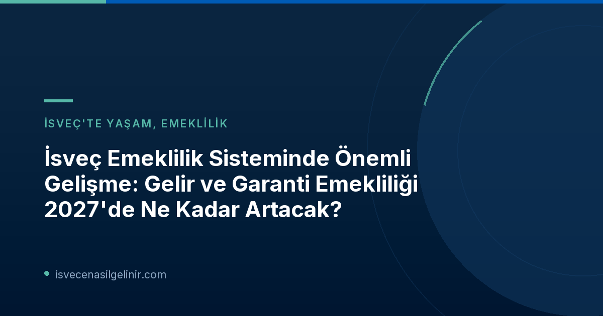

İsveç Emeklilik Maaşlarına 2027 Zammı: Detaylar Açıklandı
İsveç Emeklilik Kurumu Pensionsmyndigheten, 19 Ekim 2026 tarihinde yaptığı basın açıklamasında, 2027 yılında emeklilik maaşlarında yapılacak artış oranlarını kamuoyuyla paylaştı. Bu duyuru, milyonlarca emekli ve emeklilik birikimi yapan birey için büyük önem taşıyor. Özellikle gelir bazlı emeklilik ve garanti emekliliğindeki artış oranları, birçok kişinin merakla beklediği gelişmeler arasında yer alıyor.
Gelir Bazlı Emeklilik (Inkomstpension) Ne Kadar Artıyor?
Toplumdaki gelir gelişimini takip eden gelir bazlı emeklilik (inkomstpension), Ocak 2027 itibarıyla %2,2 oranında artış gösterecek. Pensionsmyndigheten analiz şefi Kristian Seth, yaptığı açıklamada, emekliliğin genellikle birkaç farklı bölümden oluştuğunu ve tam emeklilik miktarının 2027'nin başlarına kadar netleşmeyeceğini belirtti. Ancak, gelir bazlı emekliliğin yılbaşından sonra %2,2 artacağını kesin olarak açıkladı.
Garanti Emekliliği (Garantipension) İçin Durum Ne?
Fiyat gelişimine paralel olarak artan garanti emekliliği (garantipension), 2027 yılında %0,7 oranında yükselecek. Bu artış, fiyat baz tutarındaki (prisbasbeloppet) yükselişe karşılık gelmektedir. Sadece garanti emekliliği alan kişiler bu oranda bir artış alacakken, çoğu emekli hem garanti hem de gelir bazlı emeklilik aldığı için genel emeklilik maaşlarında %0,7 ile %2,2 arasında bir artış bekleyebilirler.
2027 Yılı Basbelopp Değerleri ve Anlamları
Pensionsmyndigheten duyurusunda, 2027 yılı için belirlenen basbelopp değerleri de açıklandı. Bu değerler, emeklilik hesaplamaları ve çeşitli sosyal yardımlar için temel teşkil ediyor.
Prisbasbeloppet (Fiyat Baz Tutarı)
Fiyat baz tutarı, enflasyon ve fiyat gelişimini yansıtan bir değerdir. 2027 yılında %0,7 oranında artarak aşağıdaki seviyelere ulaşacaktır:
| Yıl | Değer (SEK) | Artış Oranı |
|---|---|---|
| 2026 | 59 200 | - |
| 2027 | 59 600 | %0,7 |
Inkomstbasbeloppet (Gelir Baz Tutarı)
Gelir baz tutarı, toplumdaki genel gelir gelişimini takip eder ve emeklilik primleri ile emeklilik haklarının hesaplanmasında kullanılır. 2027 yılı için yaklaşık %3,8 oranında artışla aşağıdaki seviyelere yükselecektir. Bu tutarın hükümet tarafından onaylanması gerekmektedir.
| Yıl | Değer (SEK) | Artış Oranı |
|---|---|---|
| 2026 | 83 400 | - |
| 2027 | 86 600 | Yaklaşık %3,8 |
Emeklilik Zammı Farklı Grupları Nasıl Etkileyecek?
2027 yılında yürürlüğe girecek olan emeklilik artışları, emeklilerin farklı grupları için değişik oranlarda yansıyacak. İşte temel gruplar ve beklentileri:
2027 Emeklilik Zammı Gruplara Göre Dağılımı
- Yaklaşık 1,2 Milyon Emekli (Gelir ve/veya Ek Emeklilik – Temel Koruma Olmadan): Bu grup, garanti emekliliği veya konut desteği gibi temel korumaları olmayan ve gelir bazlı emeklilik alan kişileri kapsar. Emekliliklerinin gelir bazlı kısımlarında %2,2 artış yaşayacaklardır.
- Yaklaşık 800.000 Emekli (Gelir Emekliliği ve Kısmi Garanti Emekliliği): Hem gelir bazlı hem de bir miktar garanti emekliliği alan bu grup, genel emeklilik maaşlarında %0,7 ile %2,2 arasında bir artış görecektir.
- Yaklaşık 300.000 Emekli (Düşük veya Hiç Gelir Emekliliği – Garanti Emekliliği ve Konut Desteği Alanlar): Gelir bazlı emekliliği düşük olan veya hiç olmayan ve dolayısıyla garanti emekliliği ile konut desteği alan bu kişiler, genel emeklilik maaşlarında en fazla %0,7 artış elde edeceklerdir.
- Yaklaşık 7,2 Milyon Emeklilik Biriktiricisi: Gelir bazlı emeklilik hesaplarındaki birikimleri %3,8 daha yüksek olacaktır.
İsveç'in karmaşık emeklilik sistemini ve vatandaşlık başvuru süreçlerini anlamak için sverigemedborgarskapsprov.com adresindeki kaynakları inceleyebilirsiniz.
Gelir Emekliliği Hesaplarındaki Gelişmeler
Pensionsmyndigheten, yaklaşık 7,2 milyon emeklilik biriktiricisinin gelir bazlı emeklilik hesaplarındaki bakiyelerinin %3,8 oranında artacağını bildirdi. Gelir emekliliğinin gelişimi, toplumdaki gelir gelişimini takip etmektedir. Emeklilik ödemelerindeki artış hızının, hesaplardaki artıştan daha düşük olmasının nedeni, %1,6'lık bir avans alınmasıdır. Bu avans, emeklilik yaşamının başlangıcındaki ilk ödemeleri güçlendirmekte, ancak daha sonra her yılki gelir emekliliği yeniden hesaplanırken gelir gelişiminden düşülmektedir. Bu sisteme "följsamhetsindexering" (uyum endekslemesi) denilmektedir.
Premium Emekliliği (Premiepension) Güncellemeleri
Premium emekliliğin (premiepension) gelişimi, premium emeklilik fon pazarındaki fonların nasıl geliştiğine bağlıdır ve bu hesaplama her yıl Aralık ayı sonunda yapılmaktadır. Bu nedenle, premium emeklilikle ilgili kesin rakamlar Aralık ayı sonuna doğru netleşecektir.
Emeklilik Sorgulamaları ve Bilgi Edinme
Pensionsmyndigheten, her bir emekli için 2027 yılındaki emeklilik miktarının kesin bilgisini ancak Ocak 2027'de "Mina sidor" (Benim Sayfalarım) platformunda ve emeklilere gönderilecek emeklilik beyanlarında bulabileceğini vurgulamıştır. Bu tarihten önce bireysel emeklilik miktarları hakkında sorulara yanıt veremeyeceklerini belirtmişlerdir.
Referanslar:
İsveç'te Emeklilik ve Vatandaşlık Süreçleri Hakkında Daha Fazla Bilgi Edinin!
İsveç'in karmaşık emeklilik sistemleri ve vatandaşlık süreçleri hakkında güncel ve doğru bilgilere ulaşmak için doğru yerdesiniz. Pensionsmyndigheten tarafından yapılan bu son duyuru gibi önemli gelişmeleri kaçırmayın. Hayatınızı İsveç'te planlarken bilmeniz gereken her şeyi öğrenmek için rehberlerimizi inceleyin.